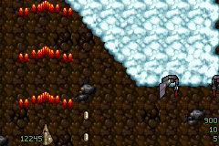

兩個座標空間
Tyrian 的完整 PC 畫面是 320×200，但戰鬥視窗不是整個畫面。右側儀表板與 下方狀態區移除後，專案使用 264×184 的原始 gameplay space。GBA 顯示為 240×160，因此水平與垂直各捨去 24 pixels：
玩家、敵人、子彈、碰撞與 level event 仍使用 source coordinates。 只有 presentation 把 world coordinate 減去裁切 origin。這避免逐物件縮放、 rounding drift 與碰撞規格分叉，也讓畫面密度保持原版感。
三層不是三張裝飾圖
原版每層具有獨立捲動速度、水平 phase、是否位於敵人前後方等狀態。 GBA 使用三個 tile background 保存 layer identity，不能把缺少的 tile 用「看起來最接近」的圖補上，否則岩壁、雲與可破壞物件會在後續事件中錯位。
- 底層地形：通常最慢或作為固定地面。
- 中層：可依 source flag 移到部分 enemy group 前方。
- 上層／雲層：需要與 sky enemy、top enemy 分開排序。
把 PC draw order 翻成有限 priority
PC renderer 可以依序畫很多群組；GBA 只有有限 BG priority 與 OBJ priority。
專案沒有為某張錯圖硬寫例外，而是把 OpenTyrian 的
background2over、background3over、
topEnemyOver、skyEnemyOverAll 等規則整理成
可枚舉的 priority policy。
回歸測試會跑完整組合，現行契約包含 252 個 layer-rule checks。這讓修正 Episode 1 的雲層時，不會無意破壞 Episode 4 的前景物件。
為何 1:1 更便宜
ARM7TDMI 沒有硬體除法器。若每個 sprite、子彈與碰撞 box 都做 240/264、 160/184 的比例換算，除了 CPU cost，也會引入不同的四捨五入結果。 1:1 crop 把成本收斂成整數加減、OAM clipping 與 background offset， 將有限 cycle 留給敵人 AI、碰撞與資源快取。
